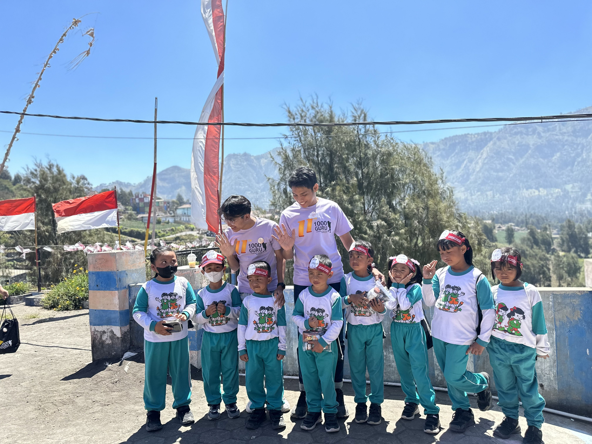
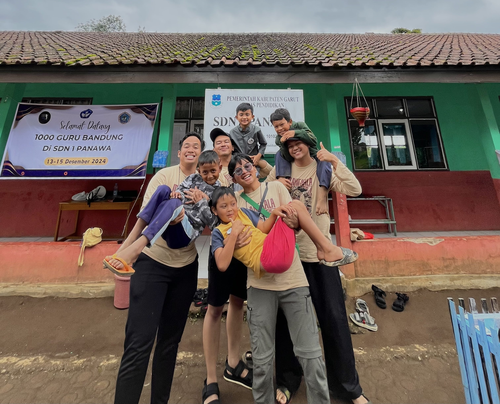

Data & Business Intelligence Analyst
Transforming massive data into strategic decisions
4 years across three industries: Banking, FMCG, and the Public Sector. I manage data end to end, from building automated extraction pipelines to designing executive dashboards that actually get used. My full stack background means I can work directly with engineering teams without losing context in translation.
4+
Years of experience
15+
Projects shipped
3
Industries covered
4.5k+
Institutions impacted


Social Impact & Volunteering
Empowering communities and inspiring the next generation through education.

Volunteer Teacher at SD Ngadisari
Taught 1st-grade students at the highest-altitude school in the Bromo region. Fostered a highly tolerant and polite learning environment while inspiring students with high aspirations to become doctors, police officers, and more. Organized interactive learning sessions focused on traditional games, driving enthusiastic and joyful student participation.
Watch Documentary"At the highest peak of Bromo, I learned that no altitude is too high for a child's dreams."

Volunteer Teacher at SD 1 Panawa
Taught 3rd-grade students in a community deeply rooted in Sundanese culture. Delivered engaging lessons on recognizing local flora and fauna, as well as crucial first aid for insect stings. Built deep emotional connections with the incredibly friendly and cheerful children, culminating in a deeply moving farewell.
Watch Documentary"We came to teach them about nature, but their cheerful smiles and tearful goodbyes taught us the true meaning of sincere connection."